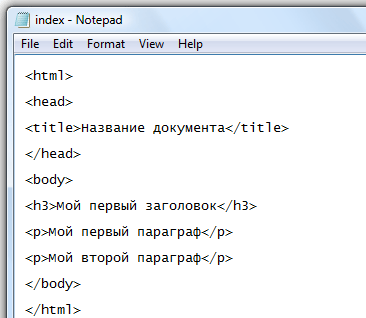

Ответы на вопросы
Вопрос 1

Вопрос 2
article
aside
details
summary
figure
figcaption
header
footer
nav
mark
time
Вопрос 3
h1– главный заголовок
h2- второй уровень заголовка
h3- третий уровень заголовка
h4– четвертый уровень заголовка
h5– пятый уровень заголовка
h6– шестой уровень заголовка
Вопрос 4
Поддержка аудио
- audio – основной элемент для воспроизведения звука.
Поддержка видео
- video – аналогично audio, но предназначен для воспроизведения видео.
Вопрос 5
Абсолютное позиционирование- используется для размещения элемента точно в определенном месте относительно окна браузера или контейнера (родительского элемента).
Относительное позиционирование- устанавливает позицию элемента относительно его обычного положения в потоке документа. Оно может использоваться для корректировки положения элемента без полного отрыва его от обычного потока.
Фиксированное позиционирование- позволяет зафиксировать элемент в определенном месте экрана независимо от прокрутки. Обычно используется для фиксированных панелей или меню.
Вопрос 6
- position-устанавливает общий режим позиционирования.
Допустимые значения:
static,
relative,
absolute,
fixed.
Вопрос 7
Основные из них:
-input – основной элемент для ввода информации пользователем. Может иметь разные типы ввода, такие как текст, пароль, число, email и другие.
-textarea – элемент для многострочного ввода текста.
-select – элемент выбора из предопределенного списка значений.
-datalist – элемент для работы с автодополнением значений.
-button – кнопка для выполнения действий.
-label – метка для связи с элементами формы.
-fieldset – группирует логически связанные элементы формы.
-output – отображает результаты обработки данных формы.
Вопрос 8
class - Этот атрибут используется для назначения класса стилям элемента. Классы применяются в CSS для определения стилей группы элементов.
id - Атрибут id уникально идентифицирует элемент на странице. Его значение должно быть уникальным в пределах всего документа. Используется для ссылки на элемент с помощью JavaScript или CSS.
style - Атрибут style позволяет задавать стилевые свойства непосредственно в HTML, избегая необходимости использования внешних CSS файлов. Однако этот подход не рекомендуется из-за увеличения объема кода и снижения читаемости.